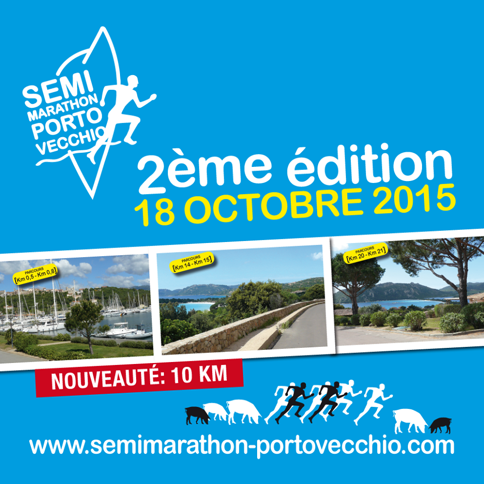

Concert corse avec Alba
La musique de L’Alba, intemporelle et ouverte sur le monde, offre en scène, avec force et finesse, de purs moments de grâce.
Depuis près de dix ans, la musique de L’Alba renoue avec la tradition instrumentale quelque peu oubliée des formations insulaires, n’hésitant pas à la faire évoluer vers un mode plus contemporain.
L’Alba lui redonne ainsi une place de choix dans le paysage musical tout en conservant l’héritage des voix polyphoniques.
Tarif : 18 € (gratuit - 12 ans)
Billetterie à l'Office de Tourisme de Porto-Vecchio
Le Semi-Marathon de Porto-Vecchio

Un parcours mythique et inoubliable avec un départ pour l'épreuve du semi au port de commerce de Porto-Vecchio et une arrivée à Santa Guilia après avoir longé les plus belles plages de la Corse du Sud
2ème édition du Semi-Marathon International avec, en complément, un parcours de 10 km.
Inscription et retrait des dossards le 17 octobre, place du Monument aux Morts.
Départ du Semi-Marathon : 9h15, au port de commerce.
Départ du 10 km : 9h15, plage de palombaggia.
1er salon véhicule neuf & occasion du 16 au 18 octobre
Place Saint-Nicolas. Entrée gratuite de 10 h à 19 h.
Véhicule neuf & occasion - Autos -motos- quads - 4x4 - utilitaires
Dans le cadre du Salon venez nombreux pour la nocturne vendredi 16 octobre avec spectacle non -stop de 19 h 00 à 22 h 00 avec : Le groupe Vogulera, le groupe l'Amichi, des défilés de mode enfants Céline Ferrandi Création , Les peluches géantes avec le Chat Botté, démonstration de danses orientales avec Shana Dance, spectacle de danse avec l'Ecole Ferrandi Jazz Dance ...
Le salon du chocolat et des délices de Corse
23 au 25 octobre place saint Nicolas.
10 h 00 à 19 h 00 Animations gratuites non - stop. Nocturne musicale samedi 24 octobre jusqu'à 22 h 00.
Fête de Saint Martin à Sotta
fête patronale du village de Sotta
Mardi 10 Novembre
- 20h00 : Veillée Eucharistique
- 20h30 : Procession aux flambeaux dans les rues du village, suivie d’une veillée corse sur la place de l’église autour du feu…
Mercredi 11 Novembre
- 11h15 : Messe Solennelle – Prière au Monument – Partage du verre de l’amitié.
- 18h00 : Concert avec le Groupe A Filetta…
Festival de l'humour
L'Espace Culturel Charles Rocchi vous présente le 1er Festival de l'humour du 12 au 14 novembre
Au programme de ce 1er festival :
- Yves Pujol : j'adore toujours ma femme, Jeudi 12 novembre à 20h30
- U teatrinu : Roméo e Giuletta, Vendredi 13 novembre à 20h30
- Daniel Delorme : Les monologues du brocciu, Samedi 14 novembre à 17h30
- Corinne Mattei : La quarantaine épanouie, Samedi 14 novembre à 20h30
Renseignement au :
04 95 34 86 95
Sull'Aria umaggiu à Tino Rossi
L’ensemble Sull’Aria rend hommage à Tino Rossi. Récital Lyrique Roi des chanteurs de charme, faiseur de tubes et artiste populaire. Mais, qui se souvient que ce grand interprète de chansons d’amour, né à Aiacciu en 1907, a connu ses premiers succès en interprétant des mélodies classiques et, surtout, des airs d’opéra ? Le spectacle proposé par l’ensemble Sull’Aria veut avant tout célébrer le « ténor » Constantino Rossi. Sa diction parfaite, son exceptionnelle musicalité et son phrasé légendaire ont fait de lui une référence dans le monde de la musique classique, pourtant peu enclin d’habitude à apprécier les incursions de chanteurs populaires dans ce répertoire exigeant. Le plus beau compliment à l’égard de Tino Rossi vient sans aucun doute de Tito Schipa, ténor légendaire (célébré en tant que « prince des ténors »), qui a dit de lui qu’il possédait « le plus beau legato du monde », faisant référence à sa remarquable interprétation de la romance de Nadir (« Les pêcheurs de perles » de Bizet).